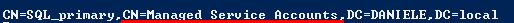

Group Managed Service Accounts (gMSA)
With Windows Server 2012, Microsoft introduced "Group Managed Service Accounts" that provide automatic password management for Services Accounts:
◇ strong password of 120 characters
◇ password is unknown to any person
◇ password changes automatically on a regular schedule
◇ password change is automatically picked up by your application
◇ credential can be used across multiple computers
Find Services Accounts on the domain:
setspn -T [DOMAIN] -F -Q */*

All these Services can be abused through the technique Kerberoasting because usually they have weak passwords set by the users (if not managed by gMSA)
A Managed Service Account(gMSA)
